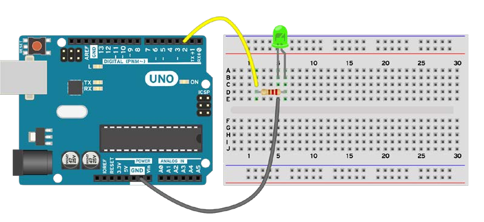

Intro
- An Arduino board connected to the computer via USB
- A breadboard and jumper wires
- A regular LED (the typical LED size is 3 mm)
- A resistor between 220–1,000 ohm
- Mount the resistor on the breadboard. Connect one end of the resistor to a digital pin on the Arduino board using a jumper wire.
- Mount the LED on the breadboard. Connect the anode (+) pin of the LED to the available pin on the resistor. We can determine the anode on the LED in two ways. Usually, the longer pin is the anode. Another way is to look for the flat edge on the outer casing of the LED. The pin next to the flat edge is the cathode (-).
- Connect the LED cathode (-) to the Arduino GND using jumper wires.
How to Make An External LED light Blink With Arduino By Cornel Amariei
It is easy to make the LED blink on an Arduino. We turn it on, wait, turn it off, wait again, and then we repeat the cycle. The Arduino boards come with an internal LED connected to pin 13. It is simple to use and always there. But most times we want our own LEDs in different places of our system. We might connect something on top of the Arduino board and can no longer see the internal LED. Here, we will explore how to connect an external LED.
Getting Ready
For this recipe, we need the following ingredients:
How to do it
Follow these steps to connect an external LED to an Arduino board:
Schematic
Wiring
One possible implementation on the second digital pin. Other digital pins can also be used. WIRING DIAGRAM wiring.png A simple way of wiring the LED.
How it works
The following code will make the external LED blink:
// Declare the LED pin
int LED = 2;
void setup() {
// Declare the pin for the LED as Output
pinMode(LED, OUTPUT);
}
void loop(){
// Here we will turn the LED ON and wait 200 milliseconds
digitalWrite(LED, HIGH);
delay(200);
// Here we will turn the LED OFF and wait 200 milliseconds
digitalWrite(LED, LOW);
delay(200);
}
Code Breakdown
The code simply turns the LED on, waits, and then turns it off again. Compared to the previous recipe, in this one we will use a blocking approach by using the delay() function. Here we declare the LED pin on digital pin 2: int LED = 2; In the setup() function we set the LED pin as an output: void setup() { pinMode(LED, OUTPUT); } In the loop() function, we continuously turn the LED on, wait 200 milliseconds, and then we turn it off. After turning it off we need to wait another 200 milliseconds, otherwise it will instantaneously turn on again and we will only see a permanently on LED. void loop(){ // Here we will turn the LED ON and wait 200 miliseconds digitalWrite(LED, HIGH); delay(200); // Here we will turn the LED OFF and wait 200 miliseconds digitalWrite(LED, LOW); delay(200); }